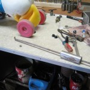
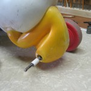

Grandpa help
This is my grandson Gunnar Anderson on the day I gave him Donald. He is not quite two years old. Gunnar soon learned to scoot down the side walk in front of their house and loved to ride alongside me as we walked to the neighbourhood park. Two years later when My Grandson came to me with his favourite toy and showed me the worn-out wheels, I tried to explain that Donald was old ,well worn and almost too small for him. The “please fix the wheels, you can fix anything, Grandpa” was more than I could resist.
Upon examination I could see the worn-out wheels were cheaply made and beyond repair.
A search of my back room found a set of new wheels from who knows where. They probably came from a swap meet several years ago, one of those “deals” you can’t resist even though you don’t know what you will do with it.
 The old wheels were held on by retainers driven on the shaft. They are often difficult to remove without destroying everything. I used a tool I made in 1966, a simple slide hammer. The axles in Donald were too small for the new wheels so the search for new axles began. I wanted something stronger than mild steel, so after determining diameter, I took my old calliper and began searching the junk pile. I always search the used iron pile first before I go buy new iron. It was nice years ago when I worked at a place with a big rack of new iron, just go over and pick what you need. The plus side is looking through discarded and broken machines and things gives one ideas.
I found a pair of old screen door closers whose centre rod fit the bill.Enough length, right diameter and good steel. The cylinders are definately not designed to be dissembled.


Note the picture’s of cutting the cylinders apart. the cylinders had a fairly strong spring inside of them. when I cut them open I had a violent reaction. This is why it is best to be alone when doing this type of thing. The red lines indicate where on the floor the parts ended up when they stopped bouncing.
The rest was simple as the pictures show. Test assemble to determine length, remove and cut with hack saw, then grind the end smooth. I used some drive on caps that I had on hand to hold the wheels on. I believe they were purchased for pedal tractor repair. below are the pictures of me putting them on and the finished project.
Below is one Happy Grandson, I don’t think Donald will last very long as Gunnar is too big for it already. he can go lightning fast down the side walk but I had to say no when he took it up to the top of the slide. No matter how long it lasts, that smile below was More than worth the effort I put into it.
Update for September Gunnar has discovered the tricycle—–although he can still go faster down grade on Donald.
Leave a comment
You must be logged in to post a comment.